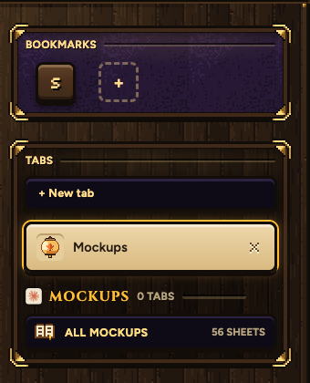
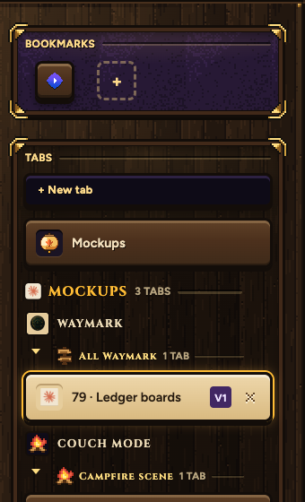
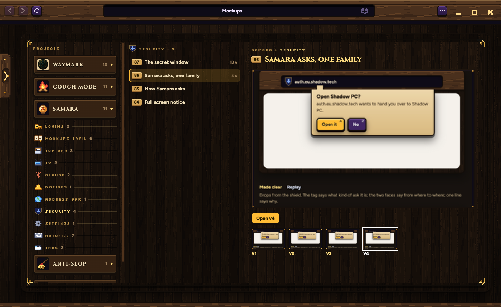

Every mockup in a tab of its own, opened from the trail in your left rail. Every picture here is Samara itself, running on a copy of your trail.

MOCKUPS stays in your tab list, even with nothing open
ALL MOCKUPS opens the Mockups tab. The count is every sheet outside the Archive.

Each project's own logo when it has one
Waymark wears its real logo. Samara wears its lantern. Couch Mode and Anti-slop have no logo of their own yet, so they wear a pixel campfire and Samara's broom. When a project gets a logo in its folder, Samara picks it up by itself.
Tucked away after 3 days
A mockup tab you haven't looked at in 3 days closes by itself. It's still in the Mockups tab. The one in front of you, and one that just arrived, never close.
In your window, in place of the page, like Settings
Projects with their logos on the left, each topic with its icon under it. That topic's sheets in the middle. The one you pick big on the right, with every version under it.

Claude does, when it starts a topic: it picks the icon that fits from Samara's set (a top bar, the shield, a TV, a bell, a key, a globe, a cog, a book, a keyboard, tabs, a campfire, a game pad, a scroll, a star, a signpost and more). If nothing fits, it draws a new one in the same style and shows you first. The topics you have now got theirs picked the same way.